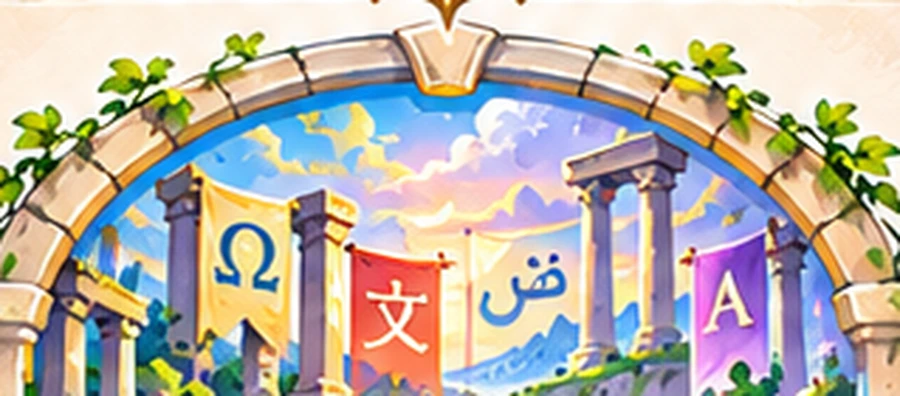
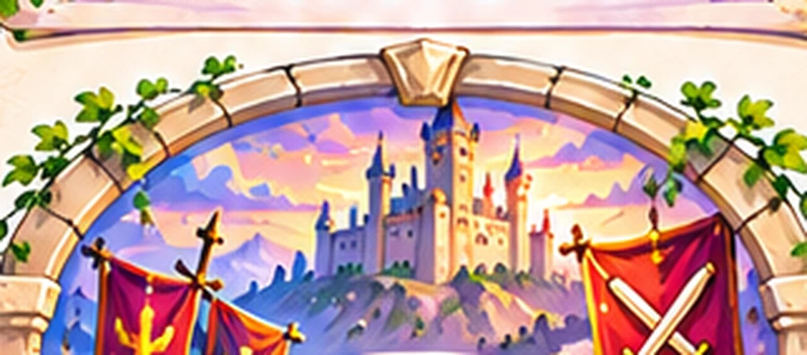
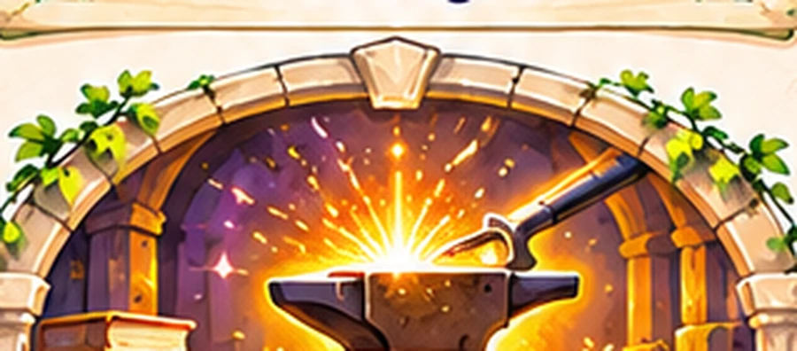
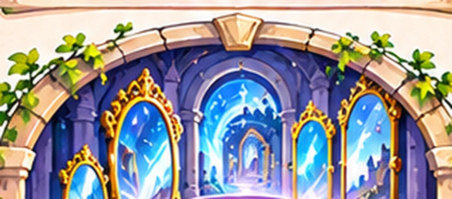
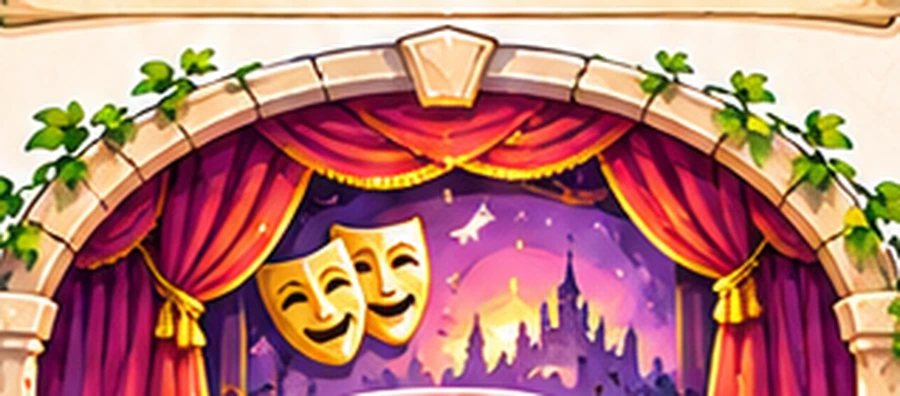
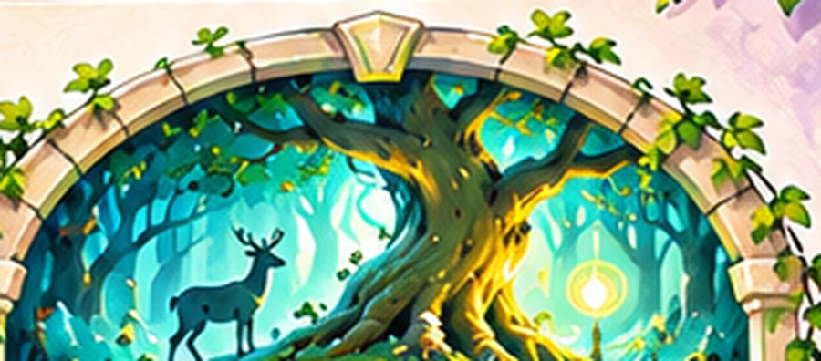
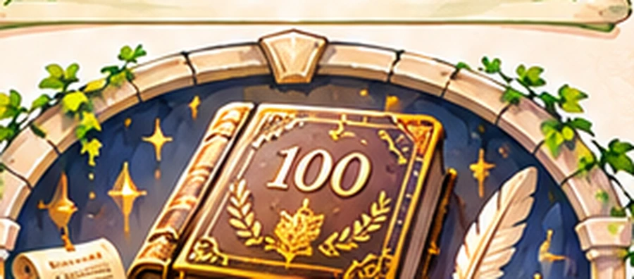
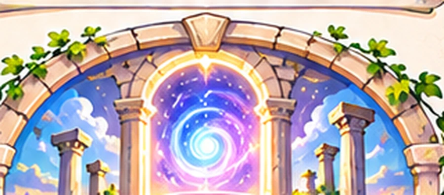

PORTAL 1 · Situación de aprendizaje 1
Seis situaciones de aprendizaje, tres proyectos de lectura y un espacio para escribir tu propia historia.

Un mensaje de Ariadna: Cada puerta guarda un nuevo desafío. Avanza a tu ritmo, descubre las historias y deja tu huella en esta biblioteca.





2.º ESO: hemos conservado los nueve portales ilustrados y la SA1 interactiva. Las antiguas SA 3, 6 y 9 ahora aparecen correctamente como proyectos de lectura 1, 2 y 3. Consultar también la biblioteca original de 2.º ESO.



Tu libreta de textos tiene su propio rincón en la biblioteca: propuestas, instrucciones y fechas de entrega. Los textos se escriben a mano en tu libreta.
Entrar en mi libreta →